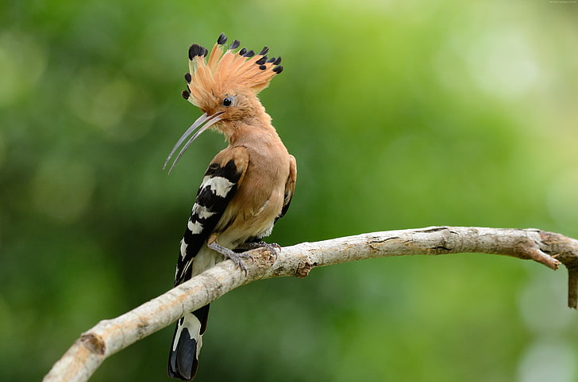
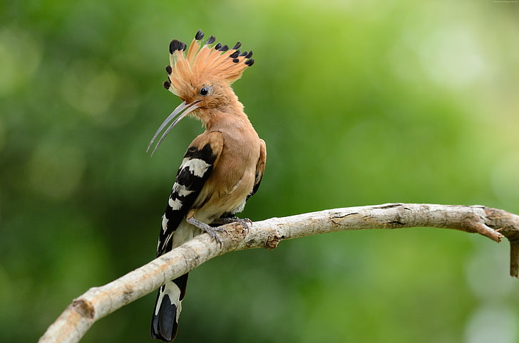

The introduction of birds says that they are an organization of Aves-class warm-blooded vertebrates characterized by wings, hard-shelled egg-laying, toothless beaked jaws, an increased metabolic rate, a heart with four chambers, and a powerful yet light skeleton. The bird scientific name is Aves.

Feathers are the outer covering of birds' bodies. Feathers isolate birds from water and low temperatures, and color can be used as camouflage against predators and sometimes as a means of visual communication. Although individual feathers are very light, the weight of a bird's feathers is two or three times greater than its skeleton
Female birds lay eggs and continue incubating them for a certain time. Also, the number of eggs changes from one species to another, ranging from one egg, as in the condor bird, and up to seventeen, as in the gray partridge, and its color is usually white because of the calcium carbonate that makes up the shell, But some birds may produce colorful eggs
The skeleton of the bird combines strength and lightness. One of the signs of the strength of the bird’s bones is the fusion of many of its bones together in places that are usually articulated in other vertebrate animals. The vertebrae of the trunk are almost fused to each other

An important food source, they provide us with meat and eggs

Down feathers are used in the manufacture of mattresses and pillows
In the past, carrier pigeons were used to transmit messages
Protect plantations from rodents and small worms that some types of birds feed on
 

One of the birds that have been found on the face of the globe since ancient times, as this bird was mentioned in the Holy Qur’an and its story with our master Solomon. Hoopoe birds live in rural and agricultural places more than others, because this place is a source of food for them. Agricultural insects The hoopoe is distinguished by its beautiful and attractive shape, as it is characterized by its long beak, and it is classified as a bird that flies, as it has a light size and long wings that can fly for long distances. It also has light bones commensurate with the process of flight and does not hinder it.


You can find some types of birds that you can find in pigeons, and within the session that you can find in dinars, and you can find them in dinars. Sending messages as it has the ability to deliver messages to the right place and return it to the original place without getting lost.

Wide range, also known as the eagle, wide range, great behavior and nutrition depends on the predation of other animals, and through this it is easily able to play, by possessing all the contents of the prey.

The giant ibis is one of the huge birds, its weight exceeds four kilograms, and this bird settles in rivers and lakes in forests, and its numbers have decreased after the industrial expansion in China, which caused the elimination of its habitat.

The Great Indian Houbara is classified as one of the largest types of birds, with a weight of about 15 kilograms, and a height of up to one meter from the ground. and overfishing.

The Sumatran ground cuckoo comes from the dense, humid forests of southern Sumatra, and shares plumage that combines pale green, black, and brown; Which provides him with amazing camouflage, a number believed to be only 70 to 400 individuals in the wild over the years.


Swallows are a family of birds belonging to the order of passerines, a family of migratory birds, their lengths range from 18 to 20 cm. Swallows birds build their nests on the high roofs of old buildings. The swallow feeds on insects. Swallows usually live and exist as a male and female pair and fly in companions. The swallow builds its nest of mud and straw and sticks it on the roofs of houses, while the female swallow lays four eggs and is usually spotted.
The nightingale is a family of birds that follow the order of passerines from the group of birds. It is a small, white-cheeked bird, solitary, beautiful and handsome, with an example of fluency in the tongue and a good voice. When raised at home, it adds joy, joy and pleasure, and is characterized by acumen, intelligence, good cohabitation, ease of education, loyalty and familiarity with its owner to a large extent, and it flies. The various types of bulbul spread in most parts of Africa to the Middle East and Asia.
The canary is a bird belonging to the family Fringillidae, and the original habitat of the canary is the Azores, Canary Islands and Madeira. These wild birds are yellow-green in color with brown spots on the rear. All species are common in families and there are some differences in colours.
Swallows are a family of birds belonging to the order of passerines, a family of migratory birds, their lengths range from 18 to 20 cm. Swallows birds build their nests on the high roofs of old buildings. The swallow feeds on insects. Swallows usually live and exist as a male and female pair and fly in companions. The swallow builds its nest of mud and straw and sticks it on the roofs of houses, while the female swallow lays four eggs and is usually spotted.
The nightingale is a family of birds that follow the order of passerines from the group of birds. It is a small, white-cheeked bird, solitary, beautiful and handsome, with an example of fluency in the tongue and a good voice. When raised at home, it adds joy, joy and pleasure, and is characterized by acumen, intelligence, good cohabitation, ease of education, loyalty and familiarity with its owner to a large extent, and it flies. The various types of bulbul spread in most parts of Africa to the Middle East and Asia.
The canary is a bird belonging to the family Fringillidae, and the original habitat of the canary is the Azores, Canary Islands and Madeira. These wild birds are yellow-green in color with brown spots on the rear. All species are common in families and there are some differences in colours.
One reason that birds matter - ought to matter - is that they are our last, best connection to a natural world that is otherwise receding. They're the most vivid and widespread representatives of the Earth as it was before people arrived on it.
 Jonathan Franzen
Jonathan Franzen
Everyone likes birds. What wild creature is more accessible to our eyes and ears, as close to us and everyone in the world, as universal as a bird ?
David Attenborough
The homing instinct in birds and animals is one of their most remarkable traits: their strong local attachments and their skill in finding their way back when removed to a distance. It seems at times as if they possessed some extra sense - the home sense - which operates unerringly.
John Burroughs